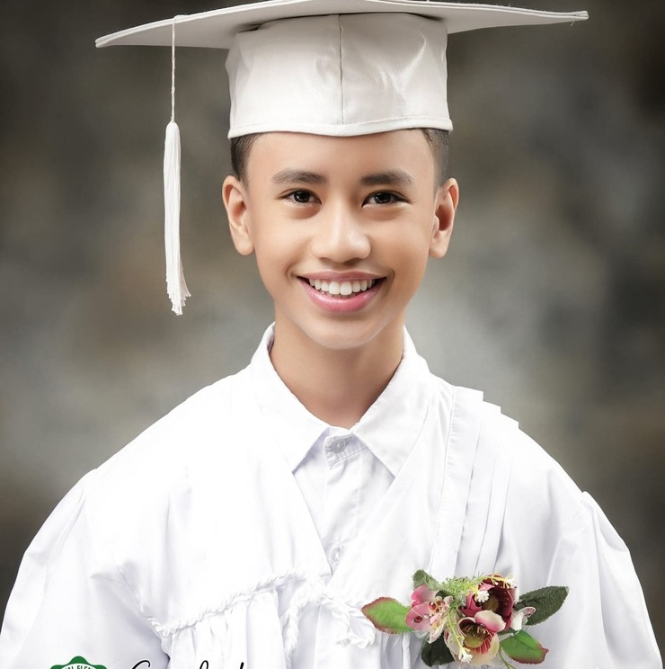

Britech College
Grade 12 - Alcaraz
Luke Lorence de Leon
Grade 12 - Alcaraz
Address: Bgy. Tolotolo, Consolacion, Cebu
Phone: 09692414870
Email: lukelorencedeleon@gmail.com
Birthdate: October 24, 2008
Educational Background
Kindergarten: CFBC of Coron Learning Center, Inc.
Elementary: Claudio Sandoval Elementary School
Junior High School: Saint Augustine Academy
Senior High School: Informatics College of Visayas
Current School: Britech College
My Expectation
I have so many expectations for this school year 2026–2027. It is the last year of being a high school student, so these are my expectations. First is that there are hindrances that will come during this school year. Although, there are also good and happy things will happen in a possible future. Second, I expected that I will make new connections from some of the schoolmates here in Britech College. Third, I will learn new things here in our school, like new knowledge, new talents, and a lot of possible things to learn about. Fourth, I expected that my new potentials will be discovered by me during this school year. And last but not least, of course I strongly expected that I will have a strong bond and connections to the teachers, faculty, and staff, and also with my classmates.
Hobbies
Watching Movies
Eating Spicy Foods
Eating in Midnight
Playing Badminton
Interests
Writing
Reading
Problem Solving
Doing Research Paper